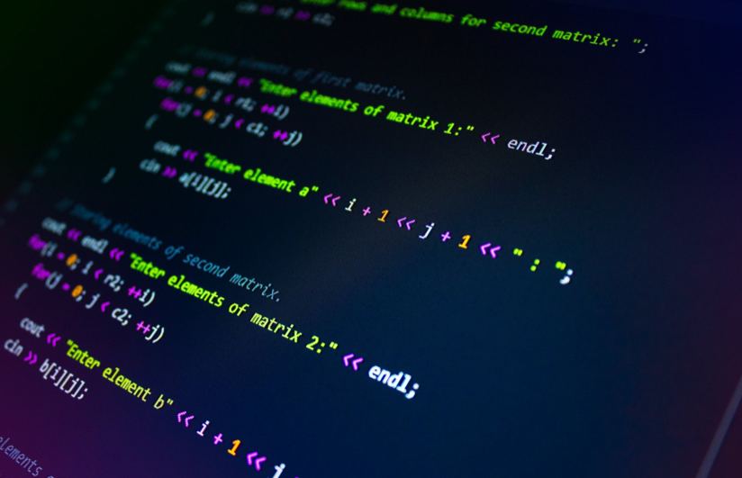
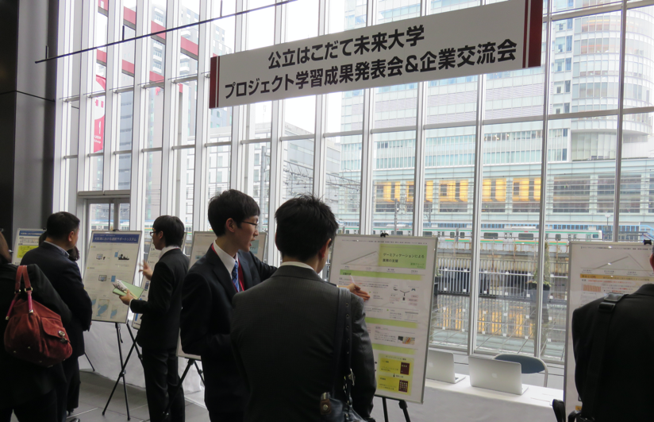

自己紹介（基本プロフィール）
- 名前
- 未来太郎（みらい たろう)
- コース
- 高度ICTコース
- プロジェクト
- 阿修羅で函館のまちをハックする
- 進路希望
- 就職
- 希望地域
- 東京、沖縄
- 希望職種
- SIer
希望研究について
希望研究領域
- ネットワークセキュリティ
- UIデザイン
- AI
希望研究テーマ
- 人工生命の創造
- 感性情報処理
- ソフトウェア開発方法論
準備状況（自己PR)
履修状況
- 3年前期までの習得済単位
- 103単位
- 3年後期での履修中単位
- 20単位
- 4年での履修予定単位
- 20単位
活動状況
プロジェクト学習
阿修羅で函館のまちをハックするで、筋電義手を作りました。


インターンシップ
株式会社未来で、ECサイトのAPIを開発しました。
言語・ツールについて
- 得意な言語
- Golang
- 得意なツール
- Docker, Kubernetes